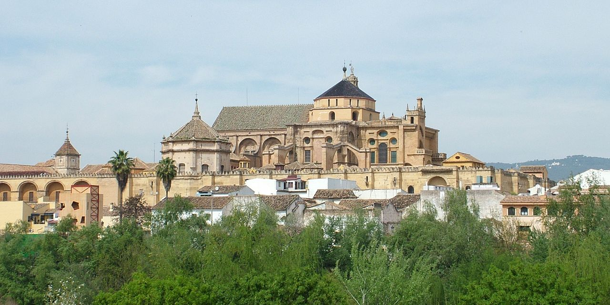

La Mezquita
Se empezó a construir como mezquita en el año 784; hasta hace poco se creía que tras la apropiación por los conquistadores musulmanes de la basílica hispanorromana de San Vicente Mártir y la reutilización de parte de los materiales, quedando reservada al culto musulmán, pero los estudios arqueológicos más recientes descartan esta hipótesis. El edificio fue objeto de ampliaciones durante el Emirato de Córdoba y el Califato de Córdoba.
Con 23 400 metros cuadrados, fue la segunda mezquita más grande del mundo en superficie, por detrás de la Mezquita de La Meca, siendo superada posteriormente por la Mezquita Azul (Estambul, 1588). El muro de la qibla no fue orientado hacia La Meca, sino 51º grados hacia el sur; esto era habitual en las mezquitas de al-Ándalus.
Según la tradición, en el solar de la actual Mezquita-catedral de Córdoba estuvo originalmente una iglesia cristiana dedicada a San Vicente Mártir, que fue dividida y compartida entre cristianos y musulmanes tras la conquista islámica de la península ibérica. Con el aumento de la población islámica, el emir Abderramán I decidió en 785 comprar la estructura al completo y demolerla12 para construir la nueva mezquita; a cambio, permitió a los cristianos reconstruir otras iglesias en ruinas, incluidas las de los mártires San Fausto, Januario y Marcial, que gozaban de gran devoción en la época.
La historicidad de estos eventos ha sido discutida, debido a que las evidencias arqueológicas son escasas y no se ha podido comprobar con hechos posteriores a la llegada de Abderramán a la península. El relato de la iglesia siendo reconvertida en mezquita, que es desarrollado por el historiador del siglo x Al-Razi, alberga muchas similitudes con la conquista musulmana de Siria, en particular con la construcción de la Mezquita de los Omeyas en Damasco. Para los historiadores medievales, estos paralelos servían para enaltecer la conquista omeya de la península y la apropiación de la Córdoba visigoda. Otra fuente del siglo x menciona una iglesia que se levantó en el centro de la mezquita, sin dar muchos más detalles. Una exposición arqueológica actual en la Mezquita-catedral muestra fragmentos de un edificio tardoantiguo o visigodo excavado por el arquitecto Félix Hernández en 1930, enfatizando el carácter cristiano del monumento.5 Según Susana Calvo Padilla, especialista en la historia de la Mezquita-catedral, aunque se han encontrado los restos de estructuras similares a iglesias, no existen evidencias arqueológicas suficientes de que se haya encontrado la iglesia de San Vicente. Parece que los restos tendrían más relación con un complejo episcopal que con una iglesia que fue dividida entre musulmanes y cristianos. Pedro Marfil, arqueólogo de la Universidad de Córdoba, ha interpretado también los restos encontrados como un complejo episcopal que quizás albergara una basílica. Sin embargo, esta teoría parece estar equivocada según el arqueólogo Fernando Arce-Sainz, que declara que ninguno de los restos analizados alberga una iconografía cristiana, ni siquiera de un cementerio, que apoyara que existiera una iglesia. La historiadora del arte Rose Walker, ha criticado que Pedro Marfil se basa en interpretaciones personales. A pesar de las dudas del tipo de estructura que se encuentra en el substrato, es casi seguro que Abderramán destruyó el antiguo edificio para construir la nueva mezquita y que no tuvo relación con la forma anterior.
La mezquita fundacional fue construida por Abderramán I, uno de los últimos miembros de la dinastía omeya que había conseguido escapar de Damasco tras la masacre de su familia durante la Revolución abasí y había derrotado al gobernador abasí Yusuf ibn Abd al-Rahman al-Fihri en Córdoba, instaurando el nuevo Emirato independiente en el 756.
La construcción de la mezquita comenzó en 785 y terminó en menos de dos años. Este periodo de tiempo tan reducido puede deberse a la reutilización de piezas (material de acarreo) romanas y visigodas, sobre todo columnas y capiteles. Se desconoce el arquitecto, aunque se han observado influencias sirias (omeyas), visigodas y romanas en el diseño del edificio. Entre los albañiles probablemente se encontraban locales y sirios de origen. Según la tradición y algunas fuentes escritas, Abderramán se encargó personalmente del proyecto, aunque se ha debatido hasta qué punto influyó su persona en el diseño de la mezquita.
La mezquita fundacional albergaba una forma casi cuadrada de 74 x 79 metros cuadrados, dividida entre el patio de abluciones (sahn) al norte y la sala de oración (haram) al sur. Debido a que fue construida en pendiente, se tuvo que recurrir a una gran cantidad de relleno para crear el nivel necesario. La innovación arquitectónica más característica, que se ha repetido en edificios islámicos posteriores, ha sido la utilización de la doble arcada. Se ha especulado que Abderramán lo construyó de este modo porque le recordaba a un bosque de palmeras de su Siria natal; sin embargo, una motivación más técnica hubiera sido que las columnas reutilizadas no eran lo suficientemente altas. Para darle estabilidad a este alzado se recurre a dobles arcos, de los cuales el inferior, de herradura, hace funciones de entibo, mientras que el superior, de medio punto, es el que soporta la cubierta. Este sistema, además de la alternancia cromática y material de las dovelas, rojas de ladrillo, amarillentas las de caliza, parece estar inspirado en el acueducto romano de Los Milagros (Mérida).
El mihrab original de la mezquita (nicho que indica la dirección del rezo) no se conserva actualmente, aunque es probable que sus restos fuesen encontrados en las excavaciones entre 1932 y 1936. El artefacto hallado mostraba la parte superior del mihrab con forma de concha, similar al posterior.24 La mezquita fundacional tenía cuatro entradas: una estaba en el centro del muro norte en el patio, dos en los muros oriental y occidental del patio y el cuarto se hallaba en medio del muro occidental dentro de la sala de oración. Esta última fue conocida como Bab al-Wuzara' (la puerta de los Visires, hoy conocida como puerta de San Esteban) y es probable que fuera la entrada usada por el emir y los oficiales estatales, que trabajaban en el Alcázar andalusí contiguo. Los muros exteriores se reforzaron con contrafuertes que pueden verse a día de hoy.
Este primer edificio consta, en cualquier caso, de once naves longitudinales orientadas hacia el río Guadalquivir, cuya anchura es idéntica, a excepción de la central, que conduce al mihrab y las dos de los extremos. La central ligeramente más ancha que el resto y las laterales ligeramente más estrechas, aunque estas leves diferencias solo son apreciables en un plano. Estas naves constan de doce intercolumnios que corren en dirección al muro de la quibla.
Los muros de qibla de las mezquitas teóricamente deben estar orientados hacia La Meca, sin embargo, la Mezquita de Córdoba está orientada hacia al sur, mientras que La Meca se encuentra al sureste.3031 Esta orientación, a diferencia de las mezquitas actuales, se debe a las diferencias históricas de opinión sobre la dirección apropiada del muro de qibla en lugares islámicos más lejanos como al-Ándalus y Marruecos. En este periodo temprano, muchos musulmanes de la región preferían que la qibla estuviera mirando hacia el sur en lugar de mirar directamente hacia La Meca.32 Este hecho se basa en que el profeta Mahoma declaró que «entre el este y el oeste se encuentra la qibla», lo que legitimó las alineaciones hacia el sur. Esta práctica también emulaba la orientación de los muros de la Kaaba de la Gran Mezquita de La Meca, basada en otra tradición que consideraba que los muros de la Kaaba se asociaban con las diversas localizaciones del mundo islámico. Según esta tradición, la cara norte de la Kaaba se asociaba a al-Ándalus y, por lo tanto, la Gran Mezquita de Córdoba se orientaba al sur como si mirara a la cara norte de la Kaaba.3031 A pesar de que mezquitas posteriores en al-Ándalus estuvieron orientadas hacia La Meca, por ejemplo, la mezquita de Medina Azahara del siglo x, las expansiones posteriores de la mezquita cordobesa no modificaron su orientación original.35 Otra teoría propuesta por el arqueólogo Pedro Marfil apunta a que las estructuras originales se adaptaron a los límites urbanísticos de la ciudad tardoantigua.36